Vom Kauf bis zum Einzug ins neue Zuhause
1. Die Entscheidung / 18.05.26
Schon lange interessiere ich mich für Reptilien und wollte ein grösseres Projekt starten.
Nach vielen Recherchen entschied ich mich für eine Chinesische Wasseragame, da ich mich besonders für Reptilien, die ins Wasser gehen, interessiere.
2. Entscheid für den Terrariumbauer Rieser / 22.05.26
Die Wahl des richtigen Terrariums war für uns eine sehr wichtige Entscheidung. Ein ungeeignetes Terrarium könnte nicht nur das Wohlbefinden des Tieres beeinträchtigen, sondern auch die Optik und Funktionalität der Anlage negativ beeinflussen.
Nach sorgfältiger Recherche wurden wir auf den Terrariumbauer Adrian Rieser aufmerksam. Wir entschieden uns für ihn, weil seine Terrarien durch ihre hohe Qualität, ihr ansprechendes Design sowie ihre durchdachte und praktische Bauweise überzeugen. Zudem baut er grosszügige Terrarien, die den Bedürfnissen der Tiere optimal gerecht werden.
3. Besuch bei Exopet / 25.05.26
Nach der Planung besuchte ich Exopet und schaute mir verschiedene Tiere an.
Ich suchte nach einer jungen Wasseragame, die ruhig, bereits handzahm und natürlich auch gesund war.
Dort fand ich schliesslich meine Wasseragame "Sparky".
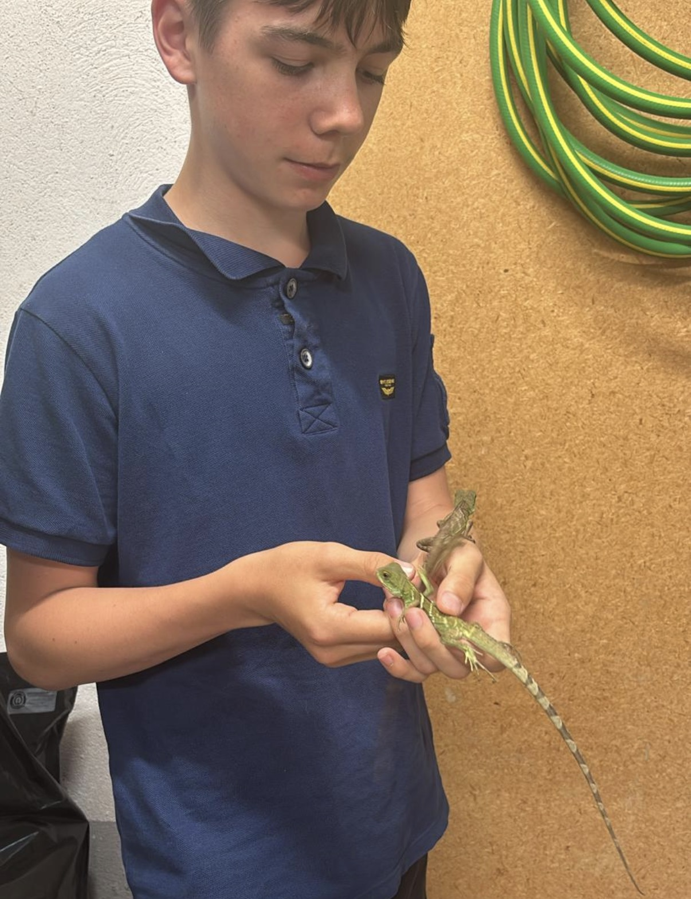
4. Das neue Zuhause / 28.05.26
Nachdem wir das Zwischenterrarium eingerichtet hatten, konnten wir endlich Sparky ins Terrarium setzen.
Am Anfang war er echt dunkel und auch schüchtern.
Am nächsten Tag war er wieder deutlich grüner und selbstbewusster.
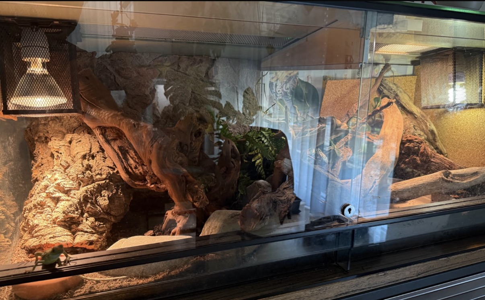
5. Die erste Fütterung / 29.05.26
Die erste Fütterung ging überaschend gut, da er die Futtertiere sofort gefressen hat, und das sogar an der Pinsette!
Also konnte er seinen Bauch gut volschlagen und war danach zufrieden und satt :).
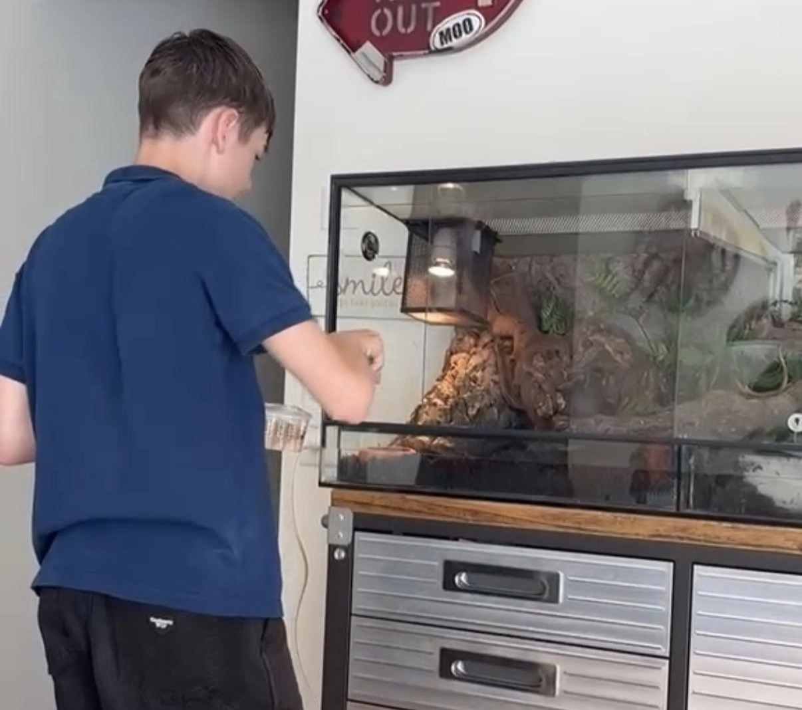
Am 3. Juni 2026 wurde unser Terrarium geliefert und montiert. Es war ein grossartiges Stück Arbeit, und das Ergebnis hat unsere Erwartungen übertroffen.
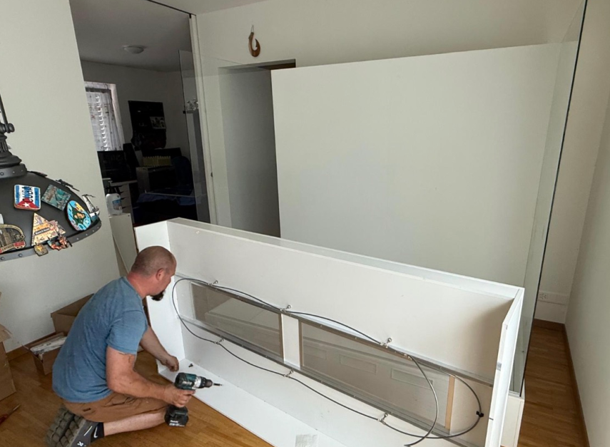
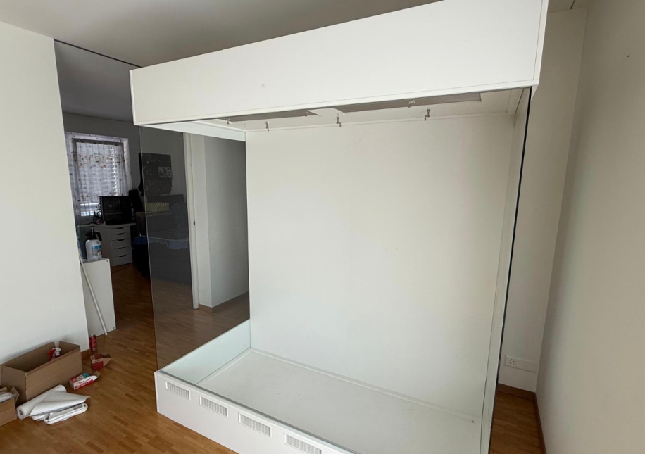
7. Elektrik installieren / 03.07.26
Nachdem das Terrarium aufgebaut war, installierten wir die gesamte Technik. Dazu gehörten die Beleuchtung, die Wärmelampen sowie die Steuerung der einzelnen Komponenten. Alle Geräte wurden sorgfältig angeschlossen und getestet, damit später die richtigen Temperaturen und Lichtverhältnisse für die Wasseragame gewährleistet sind.
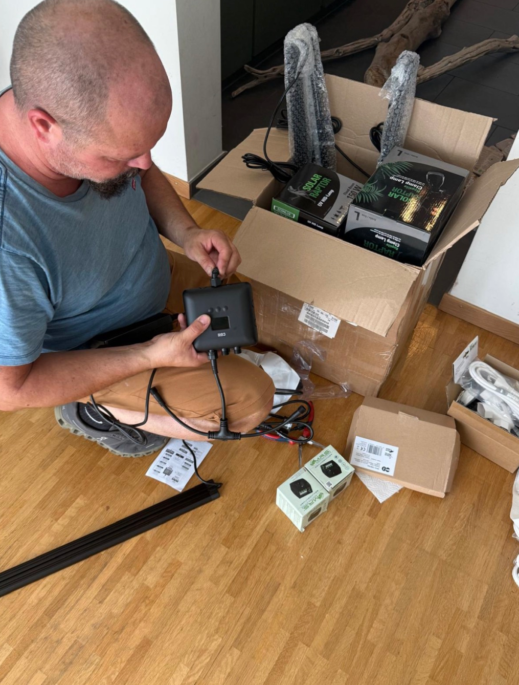
8. Rückwand Montage / 04.07.26
Am 4. Juni 2026 montierten wir die Rückwand des Terrariums mit schönem schwarzem gepressten Kork.
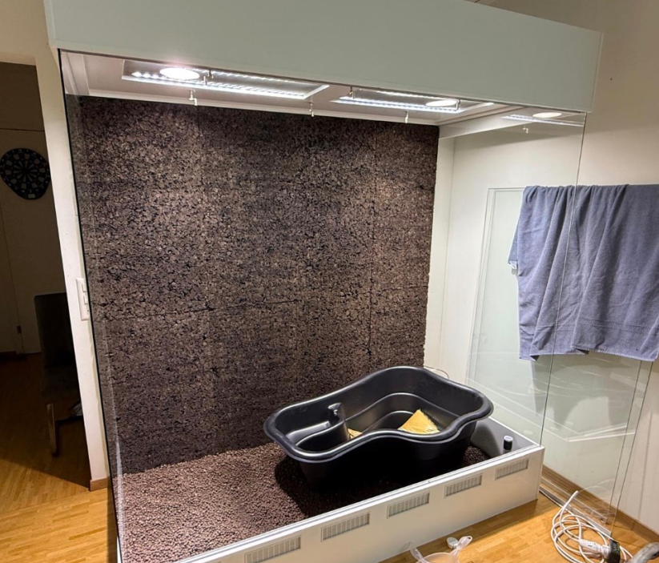
9. Erde mischen und hinzufügen / 04.07.26
Nachdem das Terrarium eingerichtet war, bereiteten wir das Bodensubstrat vor. Dafür mischten wir verschiedene Bestandteile sorgfältig miteinander, um eine natürliche und grabfähige Umgebung für die Wasseragame zu schaffen. Anschliessend verteilten wir das Substrat gleichmässig im gesamten Terrarium.
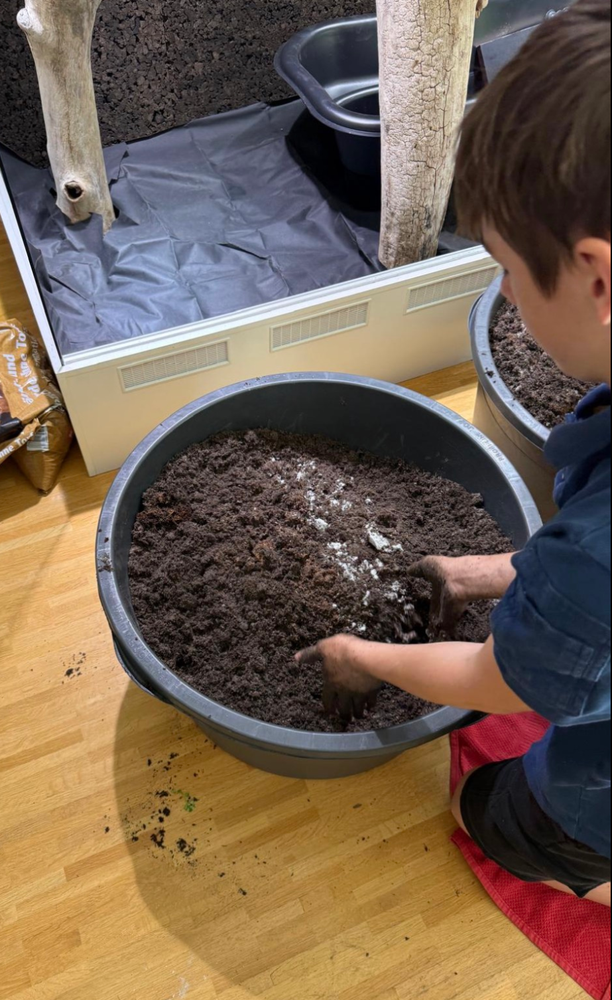
10. Das Endprodukt / 05.07.26
Nach vielen Stunden Planung, Aufbau und Einrichtung war das Terrarium fertiggestellt. Alle Pflanzen, Äste, die Rückwand, das Wasserbecken sowie das Bodensubstrat waren an ihrem Platz. Das fertige Terrarium bietet der Wasseragame eine naturnahe Umgebung mit vielen Kletter- und Rückzugsmöglichkeiten. Das Endergebnis entspricht genau unseren Vorstellungen und bietet Sparky ein artgerechtes Zuhause.
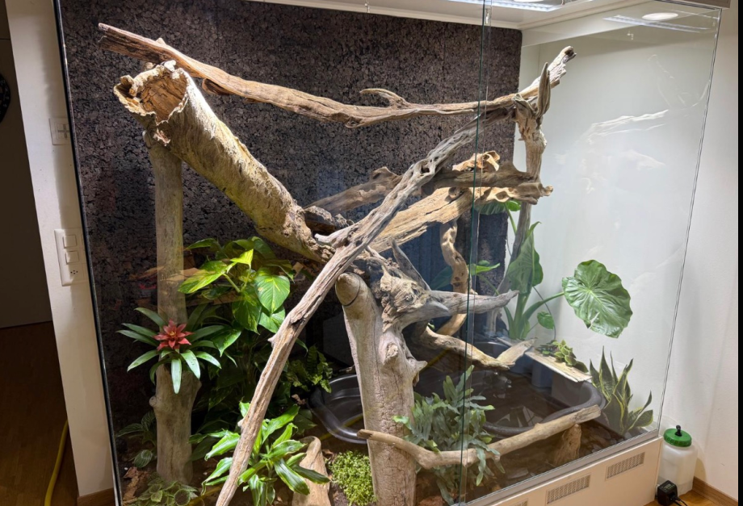
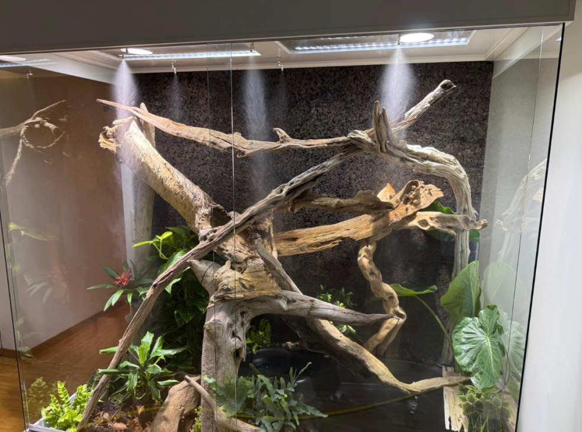
11. Einzug von Sparky / 06.07.26
Am 6. Juli 2026 war es endlich so weit: Unsere Wasseragame Sparky durfte in ihr neues Zuhause einziehen. Nach vielen Wochen der Planung, des Aufbaus und der Einrichtung konnte sie das Terrarium zum ersten Mal erkunden. Sie fühlte sich von Anfang an wohl, kletterte neugierig auf die Äste und erkundete ihre neue Umgebung. Damit war das Projekt erfolgreich abgeschlossen und Sparky hatte ein artgerechtes, naturnahes Zuhause.
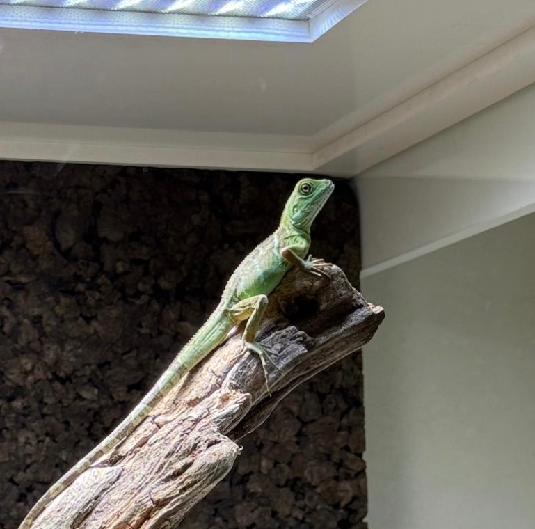